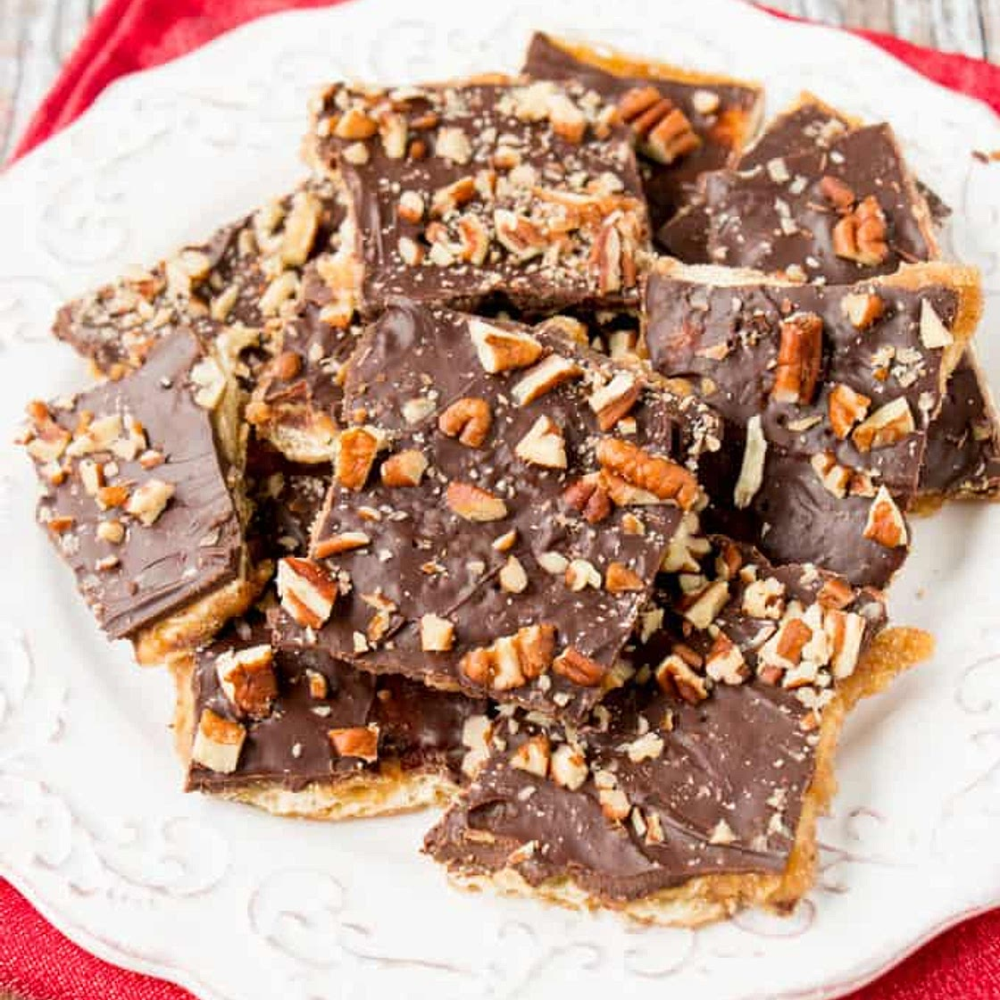

Chocolate Toffee Saltines

Ingredients
- 1 cup (227g) unsalted butter, or salted
- 1 cup (220g) packed light brown sugar, or dark
- 40 (1 sleeve) salted saltine crackers
- 270g (1 package) milk chocolate chips, or semi-sweet
- Nuts or additional toppings
- Candy or sprinkles (optional)
Steps
- Preheat the oven to 350°F (175°C).
- Line a large baking sheet with heavy-duty aluminum foil.
- If using regular foil, spray it lightly with non-stick cooking spray for easy removal.
- Arrange 40 saltine crackers in a single layer on the foil.
- Fold up the edges of the foil to form a box around the crackers. Set aside.
- In a small saucepan, add 1 cup butter and 1 cup packed brown sugar.
- Place the saucepan over medium-high heat and melt the mixture, stirring occasionally.
- Bring the mixture to a rolling boil.
- Once boiling, reduce the heat to medium.
- Continue boiling for exactly 5 minutes (set a timer), stirring occasionally.
- Immediately pour the hot toffee mixture over the crackers.
- Use a spatula to spread the toffee evenly over all the crackers.
- Place the baking sheet in the preheated oven.
- Bake for 5 minutes, or until the toffee is bubbling.
- Turn off the oven and remove the baking sheet.
- Immediately sprinkle 270g (1 package) chocolate chips over the hot toffee.
- Let the chocolate chips sit for 1–2 minutes, until they begin to look shiny.
- Once softened, use a spatula to spread the chocolate evenly over the toffee.
- If the chocolate isn’t soft enough to spread after 4 minutes, return the tray to the oven for 1 minute to help it melt.
- Sprinkle optional toppings over the melted chocolate (e.g., chopped nuts, candy pieces, or sprinkles).
- Transfer the baking sheet to the refrigerator.
- Chill for about 2 hours, or until the toffee and chocolate are completely hardened.
- Once chilled, peel the foil away from the bottom.
- Break the cracker candy into pieces.
- Store leftovers in an airtight container in the refrigerator for up to 1 week.
- You can also freeze the candy for up to 3 months.
- Tip: A 10×15″ jelly roll pan works best. If using a larger pan (like 11×17″), fold foil edges up to prevent the toffee from spilling out.
- Tip: Heavy-duty foil peels away easily. If using regular foil, spray it. Parchment paper also works and doesn’t require greasing.
- Tip: Ensure the toffee mixture is boiling hard during the 5-minute cook — this helps create a caramel-like texture.
- Tip: The toffee should bubble during baking to ensure it absorbs into the crackers properly.
- Tip: If chocolate chips don’t melt easily, consider using mini chips or pre-melting chocolate in the microwave before spreading.
Home